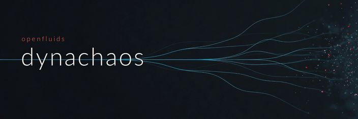

Open tools for fluid flows: state-of-the-art methods, ultra-modern low-memory code, for humans and agents.
Open code for fluid mechanics.
Stability
 linear stability and resolvent analysis docs
linear stability and resolvent analysis docs stability and bifurcation for Nek5000
stability and bifurcation for Nek5000
Analysis
 nine modal decompositions, one API
nine modal decompositions, one API
Lyapunov exponents, recurrence, entropy site- spectra, one FFT API over eight backends
- peaks in noisy, sloped spectra
- chaotic systems in the browser site
Solvers
 RANS turbulence in DOLFINx
RANS turbulence in DOLFINx
Runs
 Slurm runs from a local checkout
Slurm runs from a local checkout snapshots to frames and videos
snapshots to frames and videos